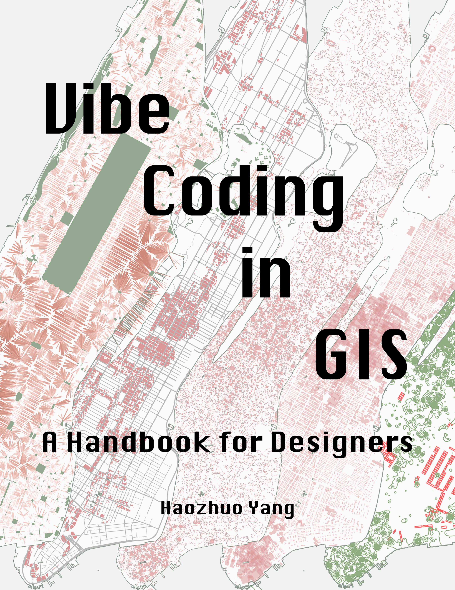

A Handbook for Designers
This handbook introduces vibe coding as a method for spatial analysis and expressive cartography in GIS. It is written for designers, planners, and researchers who work with spatial data but do not have programming backgrounds.
Based on "Experimental Cartography: Vibe Coding for GIS," a J-Term course taught by the author at the Harvard Graduate School of Design in January 2026.
Citation
Yang, Haozhuo. Vibe Coding in GIS: A Handbook for Designers. 2026. https://doi.org/10.5281/zenodo.18704614
License